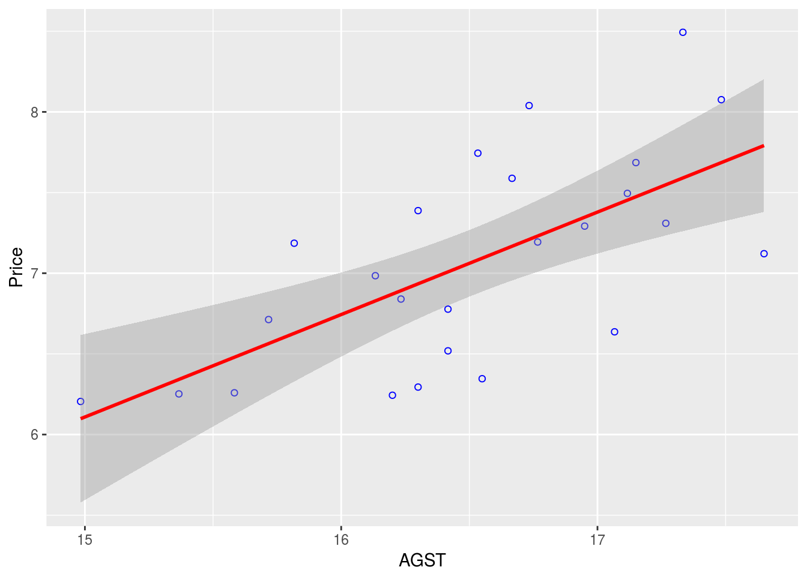

Chapter 3 Multiple Linear Regression
3.1 Single variable regression
The general equation for a linear regression model
\(y^i = \beta_{0} + \beta_{1} x^i + \epsilon^i\)
where:
- \(y^i\) is the \(i^{th}\) observation of the dependent variable
- \(\beta_{0}\) is the intercept coefficient
- \(\beta_{1}\) is the regression coefficient for the dependent variable
- \(x^i\) is the \(i^{th}\) observation of the independent variable
- \(\epsilon^i\) is the error term for the \(i^{th}\) observation. It basically is the difference in therm of y between the observed value and the estimated value. It is also called the residuals. A good model minimize these errors.1
Some ways to assess how good our model is to:
- compute the SSE (the sum of squared error)
- SSE = \((\epsilon^1)^2 + (\epsilon^2)^2 + \ldots + (\epsilon^n)^2\) = \(\sum_{i=1}^N \epsilon^i\)
- A good model will minimize SSE
- problem: SSE is dependent of N. SSE will naturally increase as N increase
- compute the RMSE (the root mean squared error)
- RMSE = \(\sqrt {\frac {SSE} {N}}\)
- Also a good model will minimize SSE
- It depends of the unit of the dependent variable. It is like the average error the model is making (in term of the unit of the dependent variable)
- compute \(R^2\)
- It compare the models to a baseline model
- \(R^2\) is unitless and universaly interpretable
- SST is the sum of the squared of the difference between the observed value and the mean of all the observed value
- \(R^2 = 1 - \frac {SSE} {SST}\)
3.1.1 First example. Predicting wine price
The wine.csv file is used.
Let’s load it and then have a quick look at its structure.
library(tidyverse)
library(skimr)
df = read_csv("dataset/Wine.csv")
skim(df)## Skim summary statistics
## n obs: 25
## n variables: 7
##
## Variable type: integer
## var missing complete n mean sd min p25 median p75
## 1 Age 0 25 25 17.2 7.69 5 11 17 23
## 2 HarvestRain 0 25 25 148.56 74.42 38 89 130 187
## 3 WinterRain 0 25 25 605.28 132.28 376 536 600 697
## 4 Year 0 25 25 1965.8 7.69 1952 1960 1966 1972
## max hist
## 1 31 ▇▆▆▇▆▆▃▆
## 2 292 ▅▇▇▅▆▁▃▅
## 3 830 ▅▁▂▇▃▃▂▃
## 4 1978 ▆▃▆▇▆▆▆▇
##
## Variable type: numeric
## var missing complete n mean sd min p25
## 1 AGST 0 25 25 16.51 0.68 14.98 16.2
## 2 FrancePop 0 25 25 49694.44 3665.27 43183.57 46584
## 3 Price 0 25 25 7.07 0.65 6.2 6.52
## median p75 max hist
## 1 16.53 17.07 17.65 ▂▃▃▇▆▆▆▅
## 2 50254.97 52894.18 54602.19 ▃▂▃▂▃▃▃▇
## 3 7.12 7.5 8.49 ▇▃▃▇▃▂▂▁We use the lm function to find our linear regression model. We use AGST as the independent variable while the price is the dependent variable.
model_lm_df = lm(Price ~ AGST, data = df)
summary(model_lm_df)##
## Call:
## lm(formula = Price ~ AGST, data = df)
##
## Residuals:
## Min 1Q Median 3Q Max
## -0.78450 -0.23882 -0.03727 0.38992 0.90318
##
## Coefficients:
## Estimate Std. Error t value Pr(>|t|)
## (Intercept) -3.4178 2.4935 -1.371 0.183710
## AGST 0.6351 0.1509 4.208 0.000335 ***
## ---
## Signif. codes: 0 '***' 0.001 '**' 0.01 '*' 0.05 '.' 0.1 ' ' 1
##
## Residual standard error: 0.4993 on 23 degrees of freedom
## Multiple R-squared: 0.435, Adjusted R-squared: 0.4105
## F-statistic: 17.71 on 1 and 23 DF, p-value: 0.000335The summary function applied on the model is giving us a bunch of important information
- the stars next to the predictor variable indicated how significant the variable is for our regression model
- it also gives us the value of the R coefficient
We could have calculated the R value ourselves:
SSE = sum(model_lm_df$residuals^2)
SST = sum((df$Price - mean(df$Price))^2)
r_squared = 1 - SSE/SST
r_squared## [1] 0.4350232We can now plot the observations and the line of regression; and see how the linear model fits the data.
ggplot(df, aes(AGST, Price)) +
geom_point(shape = 1, col = "blue") +
geom_smooth(method = "lm", col = "red") By default, the geom_smooth() will use a 95% confidence interval (which is the grey-er area on the graph). There are 95% chance the line of regression will be within that zone for the whole population.
It is always nice to see how our residuals are distributed.
We use the ggplot2 library and the fortify function which transform the summary(model1) into a data frame usable for plotting.
model1 <- fortify(model_lm_df)
p <- ggplot(model1, aes(.fitted, .resid)) + geom_point()
p <- p + geom_hline(yintercept = 0, col = "red", linetype = "dashed")
p <- p + xlab("Fitted values") + ylab("Residuals") + ggtitle("Plot of the residuals in function of the fitted values")
p
3.2 Multi-variables regression
Instead of just considering one variable as predictor, we’ll add a few more variables to our model with the idea to increase its predictive ability.
We have to be cautious in adding more variables. Too many variable might give a high \(R^2\) on our training data, but this not be the case as we switch to our testing data.
The general equations can be expressed as
\(y^i = \beta_{0} + \beta_{1} x_{1}^i + \beta_{2} x_{2}^i + \ldots + \beta_{k} x_{k}^i + \epsilon^i\)
when there are k predictors variables.
There are a bit of trials and errors to make while trying to fit multiple variables into a model, but a rule of thumb would be to include most of the variable (all these that would make sense) and then take out the ones that are not very significant using the summary(modelx)
3.2.1 First example. Predicting wine price
We continue here with the same dataset, wine.csv.
First, we can see how each variable is correlated with each other ones, using
cor(df)## Year Price WinterRain AGST HarvestRain
## Year 1.00000000 -0.4477679 0.016970024 -0.24691585 0.02800907
## Price -0.44776786 1.0000000 0.136650547 0.65956286 -0.56332190
## WinterRain 0.01697002 0.1366505 1.000000000 -0.32109061 -0.27544085
## AGST -0.24691585 0.6595629 -0.321090611 1.00000000 -0.06449593
## HarvestRain 0.02800907 -0.5633219 -0.275440854 -0.06449593 1.00000000
## Age -1.00000000 0.4477679 -0.016970024 0.24691585 -0.02800907
## FrancePop 0.99448510 -0.4668616 -0.001621627 -0.25916227 0.04126439
## Age FrancePop
## Year -1.00000000 0.994485097
## Price 0.44776786 -0.466861641
## WinterRain -0.01697002 -0.001621627
## AGST 0.24691585 -0.259162274
## HarvestRain -0.02800907 0.041264394
## Age 1.00000000 -0.994485097
## FrancePop -0.99448510 1.000000000by default, R uses the Pearson coefficient of correlation.
So let’s start by using all variables.
model2_lm_df <- lm(Price ~ Year + WinterRain + AGST + HarvestRain + Age + FrancePop, data = df)
summary(model2_lm_df)##
## Call:
## lm(formula = Price ~ Year + WinterRain + AGST + HarvestRain +
## Age + FrancePop, data = df)
##
## Residuals:
## Min 1Q Median 3Q Max
## -0.48179 -0.24662 -0.00726 0.22012 0.51987
##
## Coefficients: (1 not defined because of singularities)
## Estimate Std. Error t value Pr(>|t|)
## (Intercept) 7.092e-01 1.467e+02 0.005 0.996194
## Year -5.847e-04 7.900e-02 -0.007 0.994172
## WinterRain 1.043e-03 5.310e-04 1.963 0.064416 .
## AGST 6.012e-01 1.030e-01 5.836 1.27e-05 ***
## HarvestRain -3.958e-03 8.751e-04 -4.523 0.000233 ***
## Age NA NA NA NA
## FrancePop -4.953e-05 1.667e-04 -0.297 0.769578
## ---
## Signif. codes: 0 '***' 0.001 '**' 0.01 '*' 0.05 '.' 0.1 ' ' 1
##
## Residual standard error: 0.3019 on 19 degrees of freedom
## Multiple R-squared: 0.8294, Adjusted R-squared: 0.7845
## F-statistic: 18.47 on 5 and 19 DF, p-value: 1.044e-06While doing so, we notice that the variable Age has NA (issues with missing data?) and that the variable FrancePop isn’t very predictive of the price of wine. So we can refine our models, by taking out these 2 variables, and as we’ll see, it won’t affect much our \(R^2\) value. Note that with multiple variables regression, it is important to look at the Adjusted R-squared as it take into consideration the amount of variables in the model.
model3_lm_df <- lm(Price ~ Year + WinterRain + AGST + HarvestRain, data = df)
summary(model3_lm_df)##
## Call:
## lm(formula = Price ~ Year + WinterRain + AGST + HarvestRain,
## data = df)
##
## Residuals:
## Min 1Q Median 3Q Max
## -0.45470 -0.24273 0.00752 0.19773 0.53637
##
## Coefficients:
## Estimate Std. Error t value Pr(>|t|)
## (Intercept) 44.0248601 16.4434570 2.677 0.014477 *
## Year -0.0239308 0.0080969 -2.956 0.007819 **
## WinterRain 0.0010755 0.0005073 2.120 0.046694 *
## AGST 0.6072093 0.0987022 6.152 5.2e-06 ***
## HarvestRain -0.0039715 0.0008538 -4.652 0.000154 ***
## ---
## Signif. codes: 0 '***' 0.001 '**' 0.01 '*' 0.05 '.' 0.1 ' ' 1
##
## Residual standard error: 0.295 on 20 degrees of freedom
## Multiple R-squared: 0.8286, Adjusted R-squared: 0.7943
## F-statistic: 24.17 on 4 and 20 DF, p-value: 2.036e-07Although it isn’t now feasible to graph in 2D the Price in function of the other variables, we can still graph our residuals.
model3 <- fortify(model3_lm_df)
p <- ggplot(model3, aes(.fitted, .resid)) + geom_point()
p <- p + geom_hline(yintercept = 0, col = "red", linetype = "dashed") + xlab("Fitted values")
p <- p + ylab("Residuals") + ggtitle("Plot of the residuals in function of the fitted values (multiple variables)")Remember that the error term, \(\epsilon^i\), in the simple linear regression model is independent of x, and is normally distributed, with zero mean and constant variance.↩